Film / shot & scored in-house
/ A multidisciplinary creative studio in Aotearoa New Zealand.
SINGH /STUDIO
Telling stories that matter.
Trusted across Aotearoa
10+ years, 25+ organisations
The Salvation Army NZ / Amplify / More Conference / Band Camp / Joy Florals / Butterfly Builds / Wellington Church Network / Firezone / AFC Financial Care / Peniel Trust / Future Partners / Albany Bays / HardKase / Next Gen / NDCU / MSB Tour
01 / Position
Most studios sell deliverables. Singh Studio starts with the message, then builds whatever carries it best: a website, an app, a campaign, a film, a photograph, a room full of sound.
02 / Disciplines
Seven disciplines. Click to open.
Fast, handsome sites your team can actually run: conference platforms, brand sites and landing pages that read as well as they load.
- Design systems & UI
- Build & CMS setup
- Performance & SEO
- Care & iteration
Or browse ready-made templates: proven layouts with working demos.
The thinking layer, and where every job here starts. Positioning, narrative, key messages and the plan for where they travel, whether that’s internal, external, or six columns deep in the press.
- Comms strategy & planning
- Message architecture
- Campaign development
- Media & issues management
Small, sharp software: internal tools, member platforms and prototypes that get an idea in front of real users fast.
- Product design
- Web apps & platforms
- Rapid prototyping
- Integrations
Practical AI wired into real workflows: content pipelines, agents and automations that save Tuesdays, not just make headlines. Plus straight-talking advisory for teams working out where to start.
- Workflow automation
- Custom agents & assistants
- Content & comms pipelines
- AI strategy & training
Stills that hold a story. Studio builds, brand libraries, events, and the quiet documentary frames in between. See the light table below.
- Brand & campaign shoots
- Editorial & portraiture
- Events & documentary
- Retouch & colour
Concept to colour grade, directed, shot and finished under one roof: brand films, broadcast openers, event coverage and social cuts.
- Direction & production
- Edit, grade & motion
- Broadcast & event packages
- Social-first formats
Original score, sound design, podcasts and mixes. The message has a sound, and default library music isn’t it.
- Music production & composition
- Podcast & voice production
- Sound design for film
- Mix & master
03 / Selected work
Web, app and audio, one desk. Open a card for the full case.
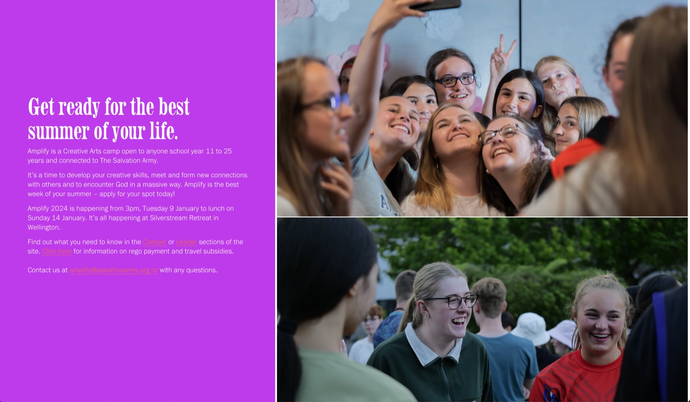

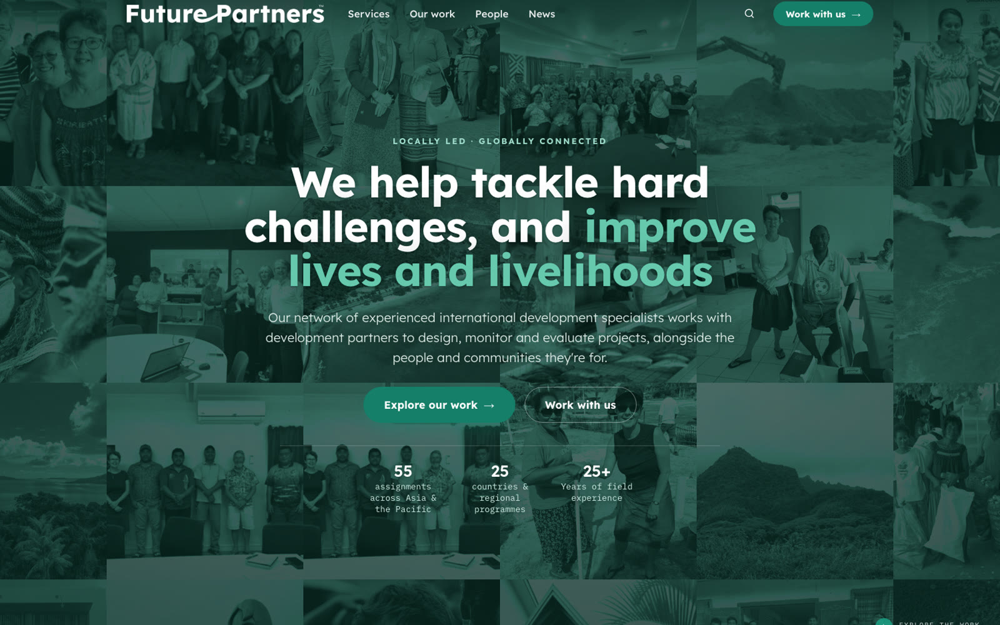
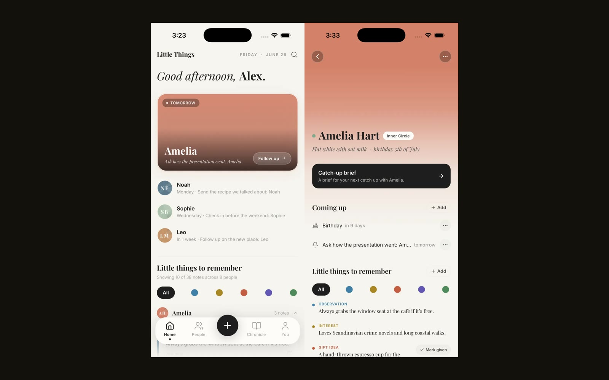
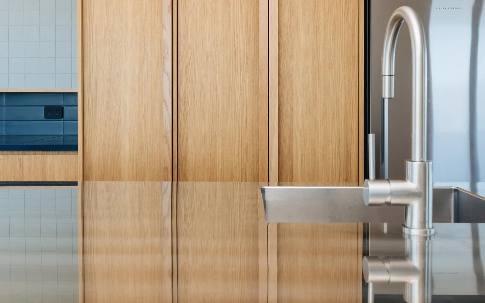

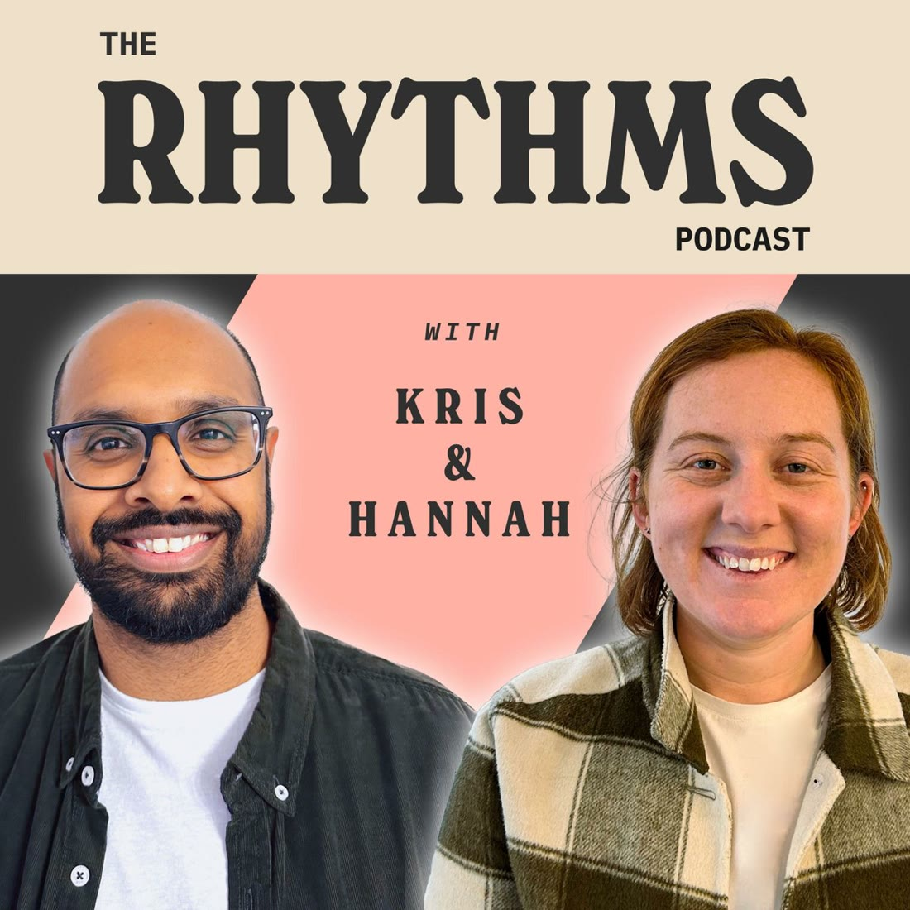
0+years behind code,
cameras & consoles
cameras & consoles
0+organisations
served
served
0disciplines
under one roof
under one roof
0point of contact,
start to shipped
start to shipped
04 / Voices
Two minutes with the people I make for.
05 / How it runs
Four steps. No account managers in between.
/01
Kōrero
A 20-minute call. The problem in your words, no deck, no discovery-phase invoice.
/02
The message
Strategy first: what you’re saying, who it’s for, and where it has to land.
/03
Production
Design and build first: sites, apps, campaigns, films. Whatever carries it best, made in-house.
/04
Ship & steer
Launch, measure, adjust. The one who took the brief stays to steer it.
Most briefs go from first call to shipped inside a month. See how engagements work →
06 / Kris
One desk, on purpose.
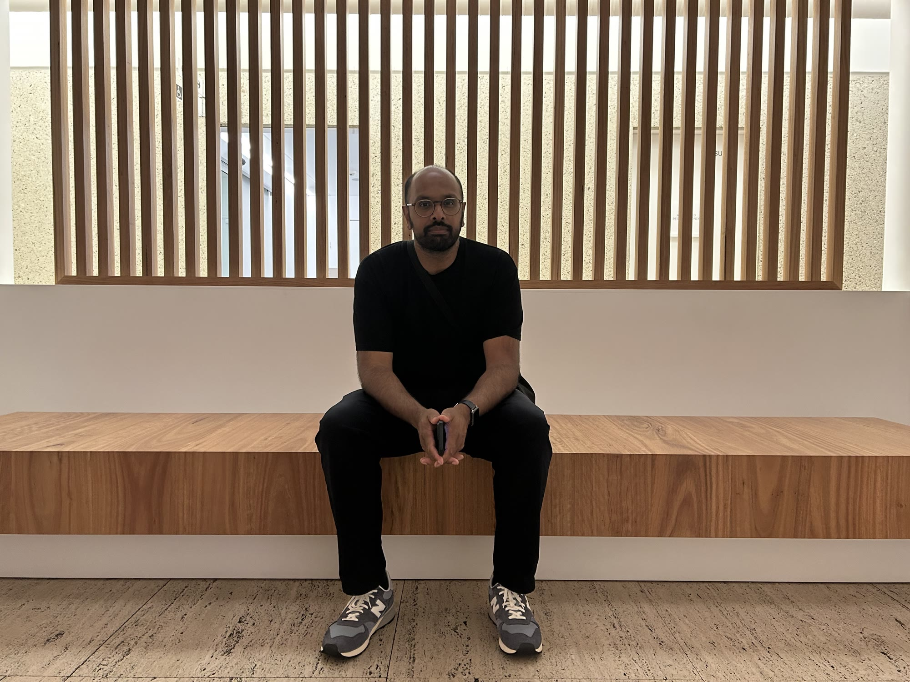
Run by Kris Singh.
Built around your message.
“If it carries the message, it’s in scope.”
I’ve spent the last decade in communications for organisations doing good work: seven years with The Salvation Army, and Anglican Missions since 2021. The studio grew out of that.
It stays one person on purpose. You talk to me on the first call, I design and build the thing, and I’m the one who answers when something needs adjusting later. Web leads the work; photography, film and audio come along when the job wants them.
- Base
- Aotearoa New Zealand, working anywhere
- Background
- In communications since 2014
- Range
- Web, apps & AI, backed by photography, film & sound
- Status
- Currently booking
/ From the archive
Keep scrolling — the table moves sideways. Browse the full archive →

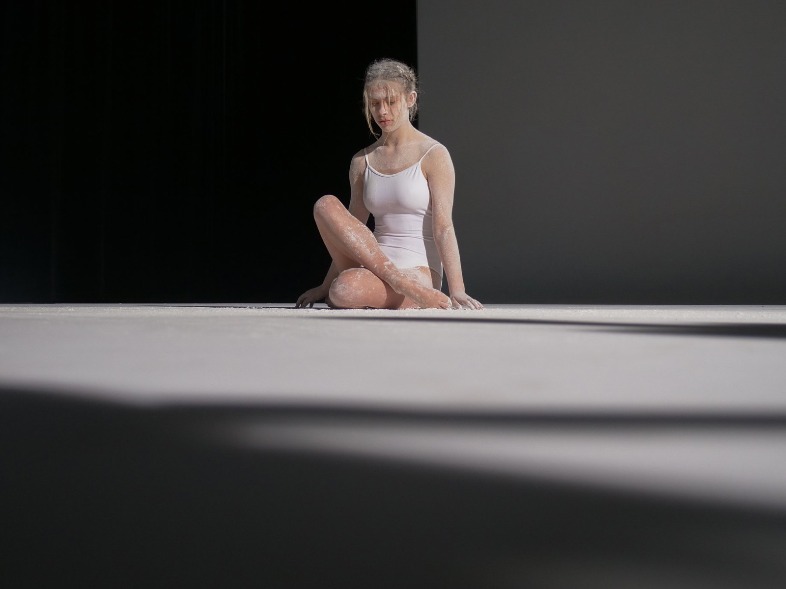
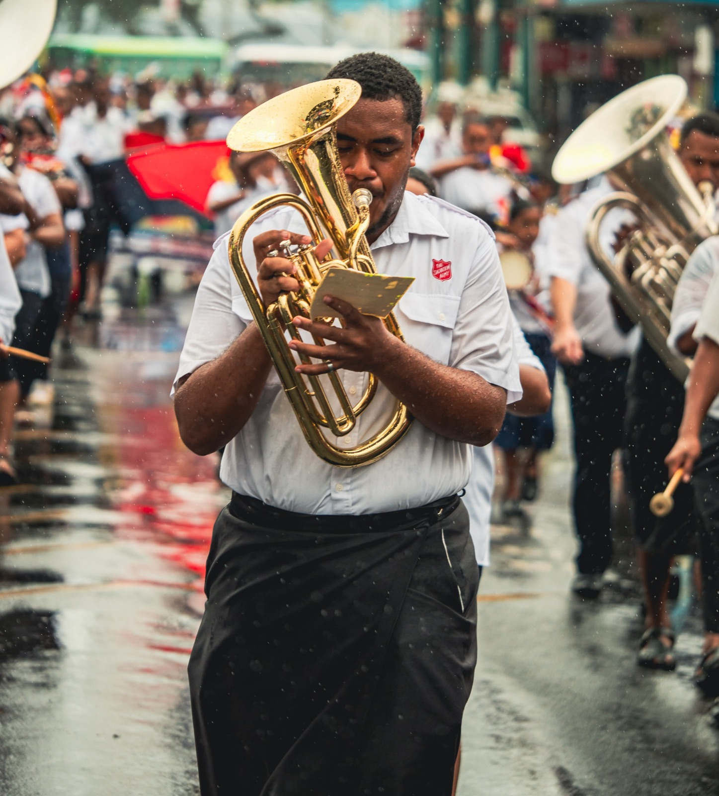

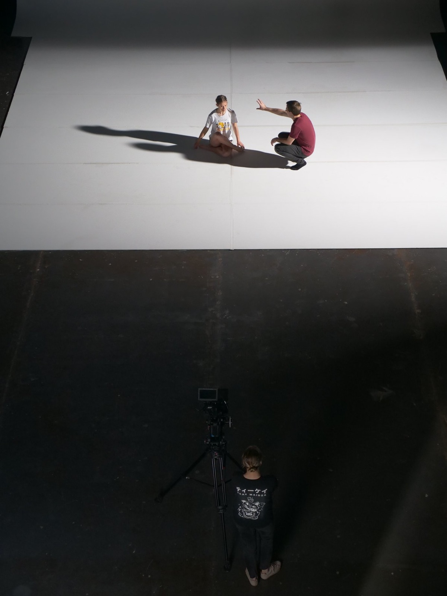


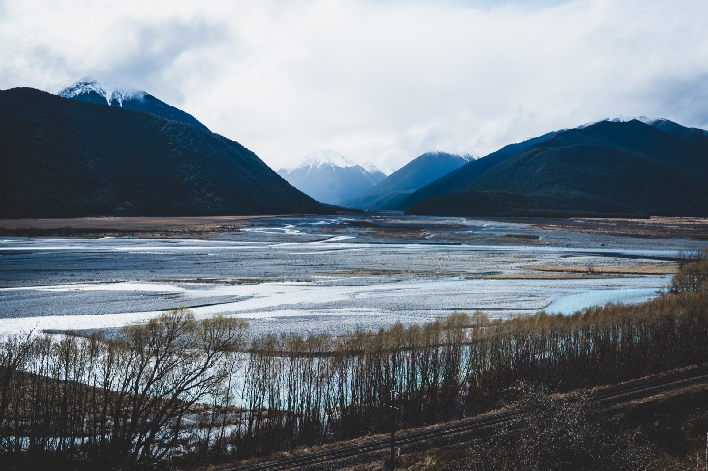


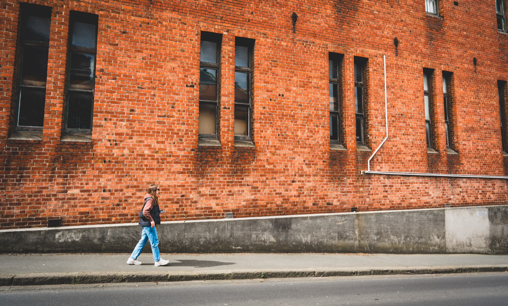
full archive 40 frames / 4 sets →
07 / Start
LET’S /TALK
Format
Intro call, 20 minutes, Google Meet
Agenda
No deck required. Bring the problem. I’ll bring the questions.
Engagements
Project · Retainer · Sprint. Full details →
Availability
Currently booking
Replies within one business day, NZT. Usually faster.